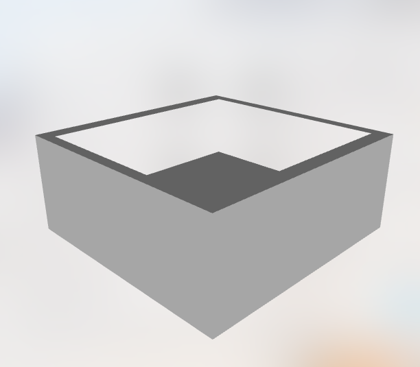

Benvenuto in ARPlaceDemo. Questa è una dimostrazione di un'applicazione + semplice sito web che permetterà all'utente di scegliere il modello (Tavolo, Sedia, Poltrona ecc) e di vederli da un dispositivo iOS 12 e provarli anche nella casa! Per provare quest'app tramite sito bisogna avere un iPhone o iPad con iOS 12 o successive, alla fine di tutto si potra testare i mobili nella propria casa :).
